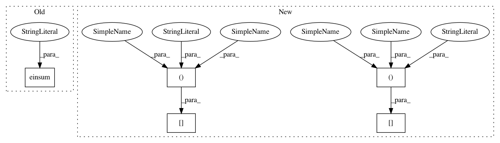

0c6e3bc88f325280af5bcfa01bc83564afe1b113,GPy/kern/src/stationary.py,Stationary,gradients_XX,#Stationary#,221
Before Change
dist = X[:,None,:] - X2[None,:,:]
dist = (dist[:,:,:,None]*dist[:,:,None,:])
I = np.ones((X.shape[0], X2.shape[0], X2.shape[1], X.shape[1]))*np.eye((X2.shape[1]))
grad = (np.einsum("kl,klij->klij",dL_dK*(tmp1*invdist2 - tmp2), dist) /l2[None,None,:,None] - np.einsum("kl,klij->klij",dL_dK*tmp1, I))/l2[None,None,None,:]
return grad
def gradients_XX_diag(self, dL_dK_diag, X):
After Change
dist = X[:,None,:] - X2[None,:,:]
dist = (dist[:,:,:,None]*dist[:,:,None,:])
I = np.ones((X.shape[0], X2.shape[0], X2.shape[1], X.shape[1]))*np.eye((X2.shape[1]))
grad = (((dL_dK*(tmp1*invdist2 - tmp2))[:,:,None,None] * dist)/l2[None,None,:,None]
- (dL_dK*tmp1)[:,:,None,None] * I)/l2[None,None,None,:]
return grad
def gradients_XX_diag(self, dL_dK_diag, X):
In pattern: SUPERPATTERN
Frequency: 3
Non-data size: 5
Instances
Project Name: SheffieldML/GPy
Commit Name: 0c6e3bc88f325280af5bcfa01bc83564afe1b113
Time: 2016-06-08
Author: ibinbei@gmail.com
File Name: GPy/kern/src/stationary.py
Class Name: Stationary
Method Name: gradients_XX
Project Name: SheffieldML/GPy
Commit Name: 0c6e3bc88f325280af5bcfa01bc83564afe1b113
Time: 2016-06-08
Author: ibinbei@gmail.com
File Name: GPy/kern/src/stationary.py
Class Name: Stationary
Method Name: gradients_XX
Project Name: geomstats/geomstats
Commit Name: 315990901cdcdca241013ee5e6c581391bae2523
Time: 2020-12-15
Author: yann.thanwerdas@gmail.com
File Name: geomstats/geometry/spd_matrices.py
Class Name: SPDMetricBuresWasserstein
Method Name: inner_product
Project Name: geomstats/geomstats
Commit Name: 315990901cdcdca241013ee5e6c581391bae2523
Time: 2020-12-15
Author: yann.thanwerdas@gmail.com
File Name: geomstats/geometry/spd_matrices.py
Class Name: SPDMetricBuresWasserstein
Method Name: exp